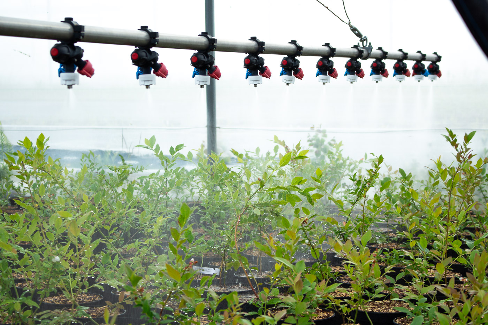
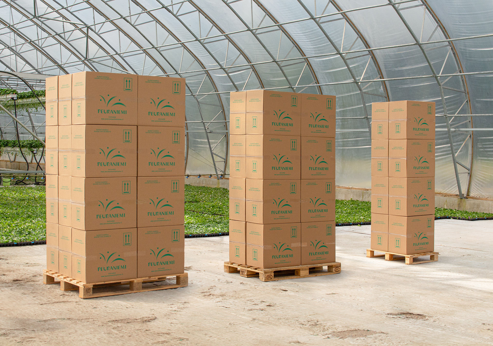

Tilaukset
Yleistä
Taimia tuotetaan varhaisesta keväästä aina loppusyksylle niin kauan kuin luonnon valoa riittää. Kevättoimituksilla viitataan talvetettuihin, aiempana kesänä kasvatettuihin taimiin. Syystoimituksilla ja syysistutuksilla puolestaan viittaavat tämän kasvukauden lisäyksiin ja näiden toimitukset ajoittuvat heinäkuun alusta kauden loppuun.
Kevään toimitusaikataulu on tiukka ja saatavuus rajallinen, joten tuotteet kannattaa tilata hyvissä ajoin jo edellisen vuoden puolella. Syystoimituksien isompiin tilauksiin pystytään vaikuttamaan parhaiten kevättalvella annetuilla tilauksilla. Tavaraa myydään niin pitkään kuin sitä riittää.
Kevät
Keväällä myymälätoimitukset aloitetaan huhtikuun puolella ja suurimmat kiireet tarhalla ovat toukokuun alkupuoliskolla. Talvetamme taimet pääasiassa ulkona lumen alla, mutta aikaisimmat huhti- ja toukokuun toimitukset varmistamme kylmiöstä hyödettävillä kasveilla.
Viljelijätoimitukset lähtevät pääasiassa kaikki ulkoa ja harsoja säätämällä pystymme hiukan säätämään toimitusaikataulua sen mukaan, miten istutuspaikat saadaan asiakkaan pelloilla valmiiksi. Tuote on kuitenkin elävä eli taimien valmistuminen kauppakunnostettavaksi riippuu pitkälti kevään etenemisestä, eikä taimien kasvua voi loputtomasti hidastaa.
Syksy
Syksyn toimitukset alkavat pääsääntöisesti heinäkuussa ja taimia voidaan lähettää sitä mukaan, kun niitä valmistuu ja paakku pysyy kasassa. Syysistutukset ovat joustavia aikataulultaan ja taimia voidaan istuttaa koko kasvukauden ajan aina myöhäiseen syksyyn asti. Mitä aiemmin istutuksen saa maahan sitä paremmin taimet ehtivät kasvaa ja juurtua saman kasvukauden aikana. Myöhään syksyllä istutetuissa taimissa on kyse enemmänkin taimien talvettamisessa maassa, jolloin vältytään kevätkiireiltä pellolla ja taimi pääsee heti kasvuun, kun lämpöä on riittävästi.
Syksyn toimitukset joustavat hyvin aikataulultaan ja koska meillä taimistolla on tähän aikaan vuodesta ainoastaan rutiinitehtäviä, joustamme lähetyksissä jopa päivätarkkuudella. Näin voidaan hyödyntää esimerkiksi satokauden sateisia hukkapäiviä tai ajoittaa istutukset heti satokauden päättymisen jälkeen, kun poimijat ovat vielä tilalla.
Pakkaukset
Taimet toimitetaan rahtilavoilla pahvilaatikoihin tai pahvikontteihin pakattuina. Taimet (pl. lepotilaiset) on syytä purkaa pakkauksistaan mahdollisimman pian, jotta ne saavat valoa.
Rahtikustannusten minimoimiseksi kannattaa tilaukset optimoida mahdollisimman täysiksi lavoiksi. Valmista laskukaavaa tähän ei ole, mutta autamme mielellämme, jos olet kiinnostunut säätämään tilausta rahtien mukaan. Tilauksen voi myös halutessaan noutaa suoraan meiltä – kannattaa ilmoittaa tulostaan hyvissä ajoin etukäteen 😉
Pakkauksista veloitamme omakustannehinnan.
Ota yhteyttä